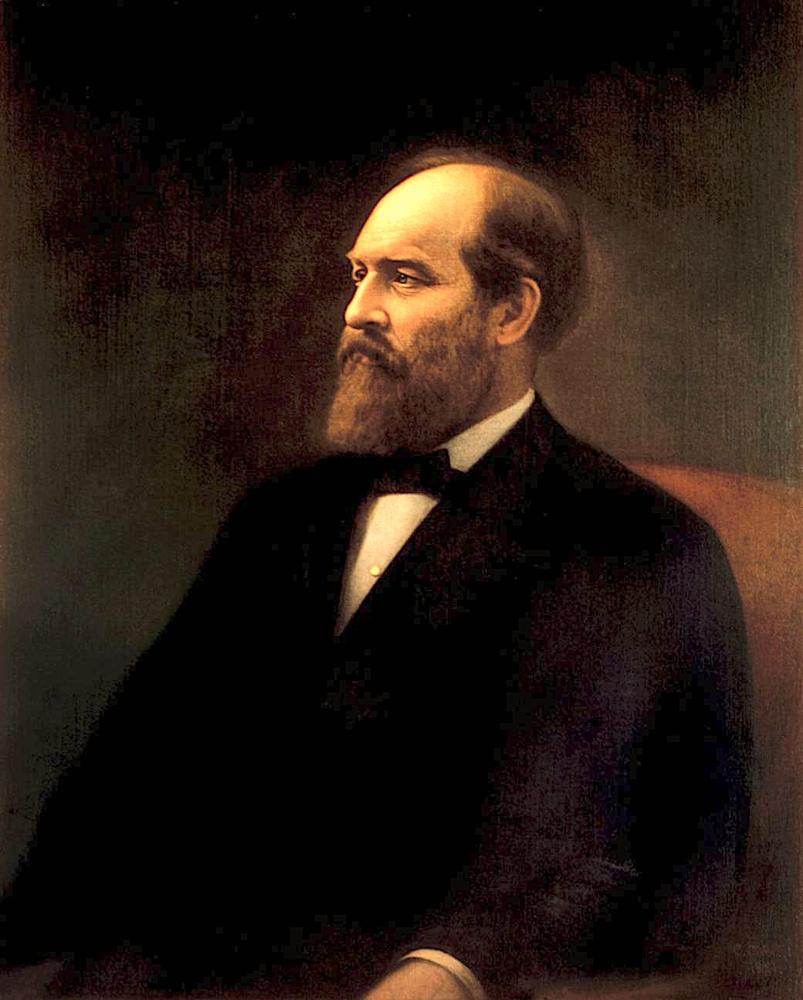

Amazingly, this is the 100th installment of my newsletter. I originally intended it to be educational, but it has become more of a self-fulfilling outlet for my views. The purpose is identical, to preserve and protect humanity from the consequences of climate change. As it has matured, the focus is now on the means of climate control plus current topics in science related to energy.
At first, I routinely added historical quotes from as far back as the Roman philosopher Seneca 1 (on the importance of paying attention to history) and the Chinese philosopher Lao Tzu 2 (on the inevitability of water). As a throwback to that era, I stole a quote from 19th-century historian Heather Cox Richardson’s Substack, “ Letters from an American ”.

“Gentlemen, ideas outlive men; ideas outlive all earthly things. You who fought in the war for the Union fought for immortal ideas, and by their might you crowned the war with victory. But victory was worth nothing except for the truths that were under it, in it, and above it. We meet to-night as comrades to stand guard around the sacred truths for which we fought. And while we have life to meet and grasp the hand of a comrade, we will stand by the great truths of the war.” Excerpt from Speech of Gen. James A. Garfield Delivered to the "Boys In Blue" New York, August 6, 1880 .
This speech, in part, led him to the Presidency and then to an assassin’s bullet. But Garfield’s underlying point is apt: Ideas are mighty things, and those that lead to great truths are immortal, particularly those determined by firmly held beliefs. The existence and expansion of such facts compelled me to choose a career as a scientist, and it’s what keeps me going.
I have been writing this newsletter for over two years, and I have recently been reflecting on its arc and meaning. Its purpose has evolved. It began as an effort to educate but has morphed into an effort to pontificate. It doesn't provide news in the traditional sense, so it’s not really “news” except to the extent that it is new to the reader. It's more like a blog, where I offer observations and opinions backed by science. The information isn't affectedly sensational clickbait but provides a critical and in-depth look at scientific conclusions that can be traced back to primary data.
I hope this newsletter continues to be a valuable use of your limited bandwidth. I probably don’t say it enough, but “Thank you for being a reader!” I am committed to providing high-quality curated content that is both informative and engaging, and, as always, I welcome reader feedback, either publicly or privately.

I originally started this newsletter to educate intelligent newcomers about science. However, this audience wasn’t engaged as much as I'd hoped. As a result, I've shifted away from a purely educational mission toward something more selfish. I now use this newsletter as an outlet for my views as a self-proclaimed independent 3 scientist.
However, I have a vested interest in achieving a particular outcome I trust you share. I want to do whatever I can to preserve and protect humanity from the inevitable consequences of modern civilization.
In this quest, I strive to be open-minded and admit my errors and omissions to eliminate bias. Acknowledging fallibility doesn’t mean I’m either disconnected from reality or less authoritative than other alleged experts. It only means that I’m human and open to growth.
What have two years taught me? Much to my dismay, I’ve discovered that not only did I miss the original target audience, but I also missed the main problem.
I have learned that the main problem is not with people who need help understanding science but with scientists themselves. In the past several decades, the profession of science has been perverted by money and the pursuit of quantifiable factors. Scientists are now more focused on raising their h -index , publication count, or getting more grant money than pursuing new knowledge.
This is not a personal criticism of my fellow scientists, especially those who have chosen to devote their careers to developing world-altering ideas in energy and climate. Idealism and devotion to a noble cause, regardless of rank, are the qualities that drove the Union’s victory in the Civil War. But, unlike war or any other political conflict, Science has no structure, no strategy, and only a muddy definition of victory. The opponent is ignorance, and we should all be on the same side, at least in principle! Plus, Science thrives on differences of opinion resolved by experimentation rather than a military hierarchy of command and control.
Scientists are contentious by nature. This is why the IPCC emphasizes the problem of climate change instead of its solution. It's much easier to reach a consensus on the problem. Scientists also tend to propose catchy, new solutions that require research and market validation, like new battery chemistries, algae that make gasoline, and flying cars. But when I've talked to them privately, they admit that not much can be done in the time we have left.
The surprising conclusion I’ve reached is that we already have all the technology we need to solve the climate control problem! What is different about my line of reasoning is that I've considered the scientific and economic consequences of deploying current technologies at a global scale in a pluralistic world. While analyzing the potential drawbacks of different solutions, I kept my eyes open for "breakthroughs" that might change the game instead of looking for a clever approach that's in my intellectual wheelhouse. Surprisingly, I found that technology breakthroughs are unnecessary because existing technologies' cost reductions are within grasp. That’s fortunate because, as a rule, technology breakthroughs take too long to have a timely impact.
I hope that you don't dismiss these ideas just because others aren't echoing them. The echo chamber is real, and it's counterproductive. Understanding a solution that can realistically be implemented in the next few decades is worth your intellectual effort!
I’ve also observed two camps of optimists: those who believe that ingenuity will transform the way we perceive the world and those who think that publicizing dire warnings about the problem will be sufficient to engage world leaders to change the behavior of all humans. Both camps are wrong. Neither cleverness nor finger-pointing can reset the planet for future generations. The main problem is that climate change continues to be cast as an ideological struggle rather than a verifiable fact. We have skilled but unlikable diplomats like John Kerry leading the charge, as if alliances and linguistic gymnastics could somehow alter the Laws of Physics and Human Behavior the way they might change the Laws of Man. We need hard-nosed technical action within technical constraints. That activity is best carried out by skilled but unlikable builders like Elon Musk and Jeff Bezos.
These billionaires have the means and motivation to create a new system from thin air, but both have outsourced their investments in climate control, ostensibly for public relations. I speculate that the underlying cause is akin to what I described earlier: Like Andrew Carnegie, these men want to leave a legacy that can last longer than the incredible businesses they’ve built. But every expert they speak with about “climate” describes a different path. What’s a late-career billionaire supposed to do?
I hope to hear from you about topics you’d like to see in the future and any concerns you have with issues in the past. I’m easy to reach, either here on the platform or via e-mail, which is easy: <my surname> at gmail dot com.
Until next time!
Thank you for reading Healing the Earth with Technology. This post is public so feel free to share it.
[See earlier posts in this series]
[See earlier posts in this series]
By “independent”, I mean that I don’t have a vested interest in any particular approach, but because I am human, the installments reflect my personal bias. See